Tutorial del Clásico
Una partida Clásica de cuatro jugadores: vos y tres bots. En diez minutos vas a ver todo lo que pasa en un turno.
1. Crear la mesa
Abrí el juego (ted.cmd en Windows,
./ted en Linux) y entrá al panel del anfitrión. En
Crear una partida elegí Clásico, 4
jugadores, y tocá Crear partida.
En el recuadro Invitá a tus amigos, elegí 3 en Bots y dejá la duración en Sin límite. Después tocá Yo también voy a jugar.
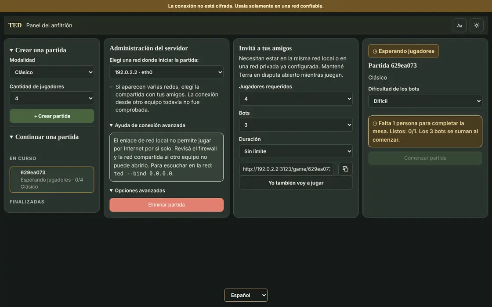
2. Entrar a la mesa
Escribí tu apodo, elegí un color y tocá Unirme. En la sala de espera tocá Estoy listo.
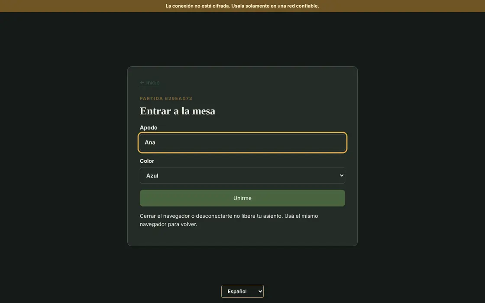
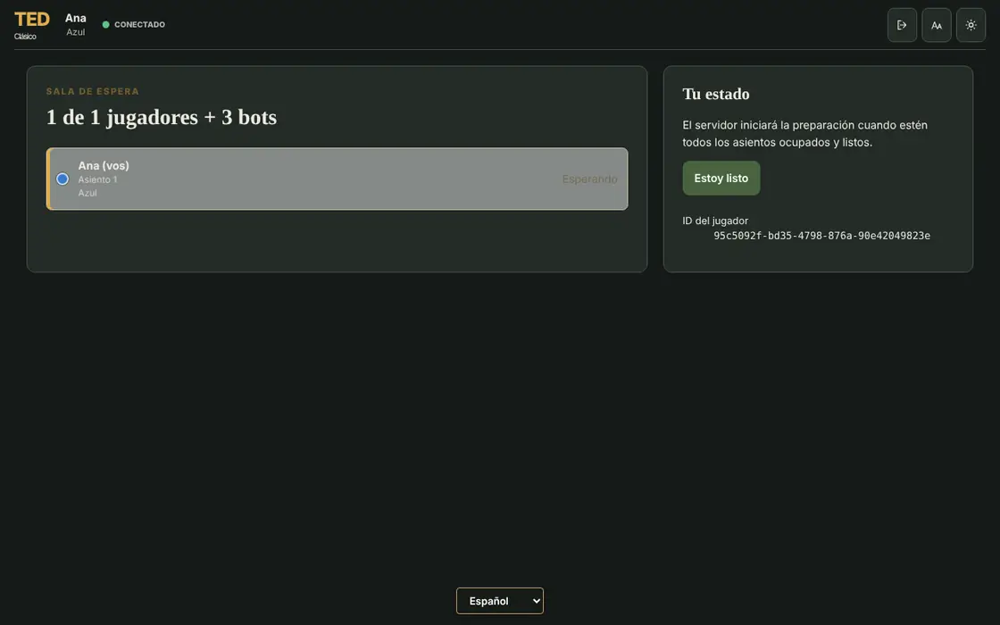
Volvé al panel del anfitrión y tocá Comenzar partida. Con amigos es igual: cada uno abre el enlace de invitación, entra y marca que está listo.
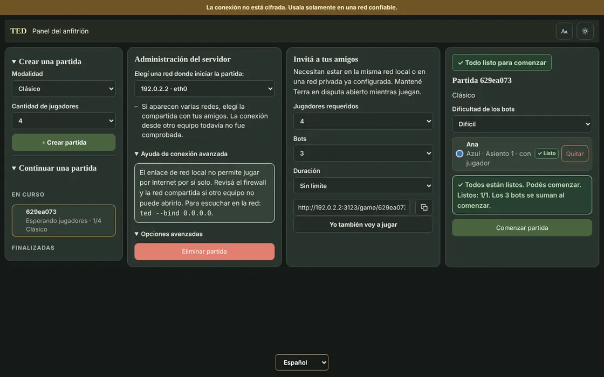
3. Colocar los primeros ejércitos
Los países ya están repartidos, con un ejército en cada uno. Abajo a la izquierda se abre el menú Distribución: elegí un país en Destino, sumá ejércitos con + y repetí hasta que la reserva llegue a cero. Después confirmá con el botón de la derecha o con Enter.
Primero colocás 5 ejércitos y, en una segunda vuelta, 3 más. Un consejo: juntá tus ejércitos en pocos países, cerca de un continente que te interese.
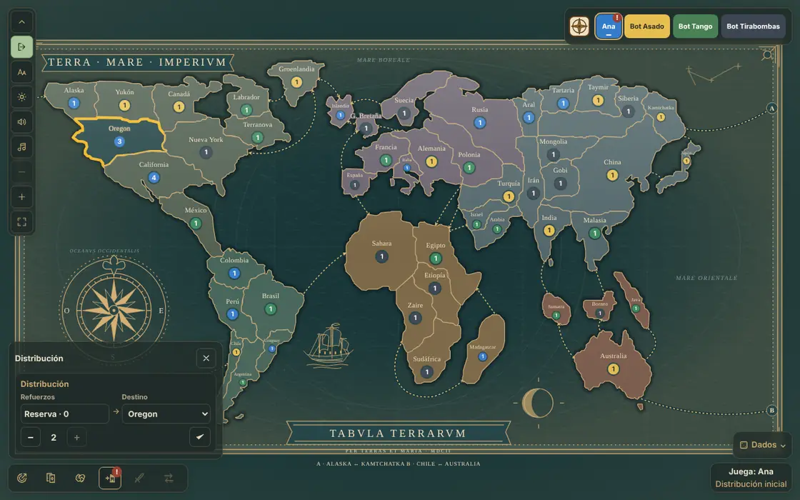
4. Mirar tu objetivo
Tocá el primer botón de la barra de abajo o la tecla O. Tu objetivo es secreto: además de cumplirlo, también ganás si llegás a controlar 30 países.
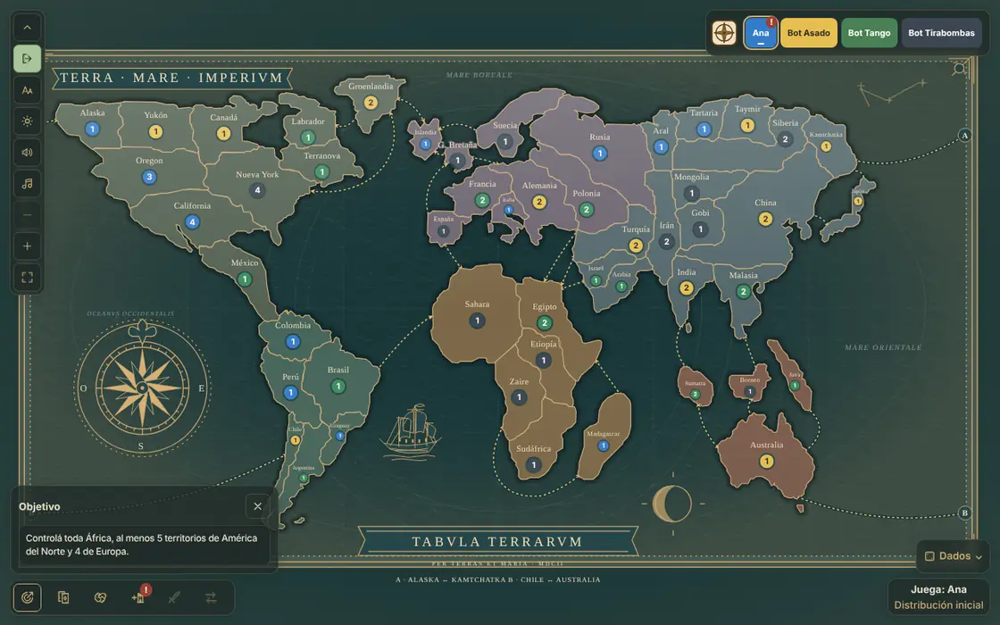
5. Atacar
Cuando todos colocaron, empieza la primera ronda de ataques. Abrí el menú Ataque, elegí un país tuyo con 2 ejércitos o más en Origen y un vecino enemigo en Destino. Después tocá el botón de la espada o Enter.
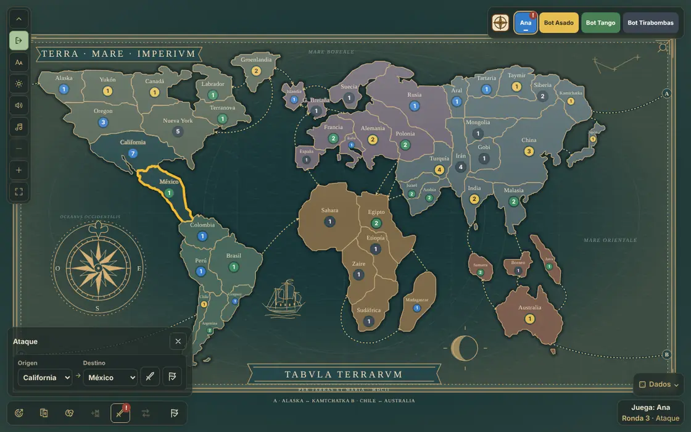
Los dados aparecen abajo a la derecha: rojos para el ataque y azules para la defensa. Se comparan de mayor a menor y los empates los gana el defensor. Si el país enemigo se queda sin ejércitos, lo conquistás y elegís cuántos ejércitos pasar, de 1 a 3.
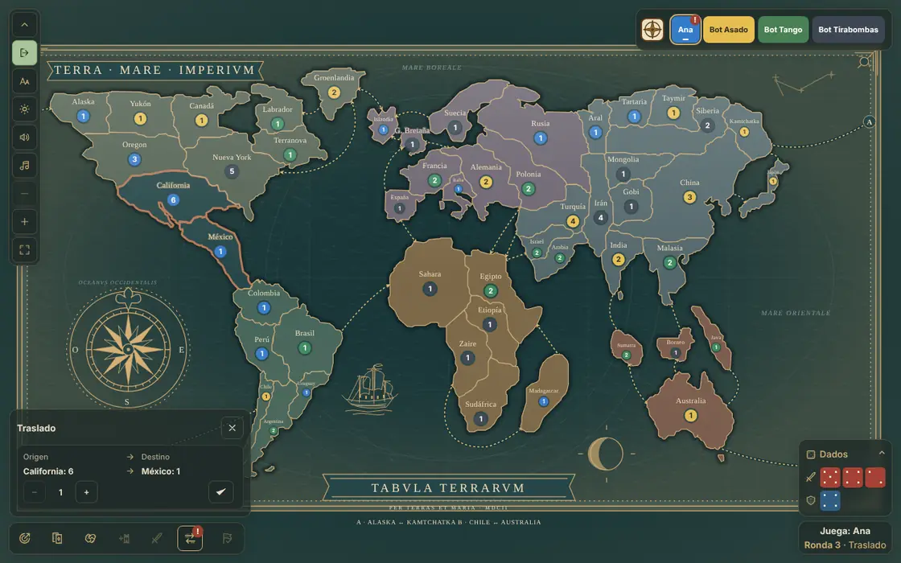
Podés seguir atacando todo lo que quieras. Cuando termines, tocá el botón de la bandera, Terminar ataques.
6. Reagrupar
En el menú Traslado / Reagrupamiento podés mover ejércitos entre tus países vecinos para reforzar las fronteras. Confirmá cada movimiento y, al final, tocá Terminar reagrupamiento.
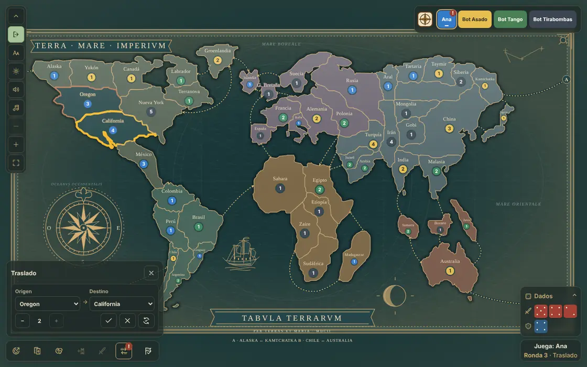
7. Pedir tu carta y terminar el turno
Si conquistaste al menos un país, en el panel Cartas (tecla C) tocá Pedir carta. Juntando tres cartas del mismo símbolo, o de los tres símbolos distintos, después podés canjearlas por ejércitos. Para cerrar, tocá el botón de la bandera de la barra, Terminar turno.
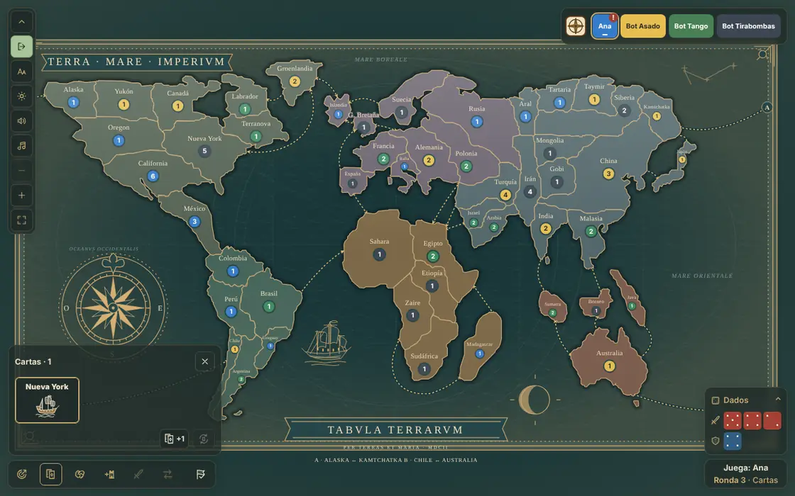
Mientras juegan los demás, el mapa marca cada ataque: el país atacante con borde rojo y el defensor con borde azul.
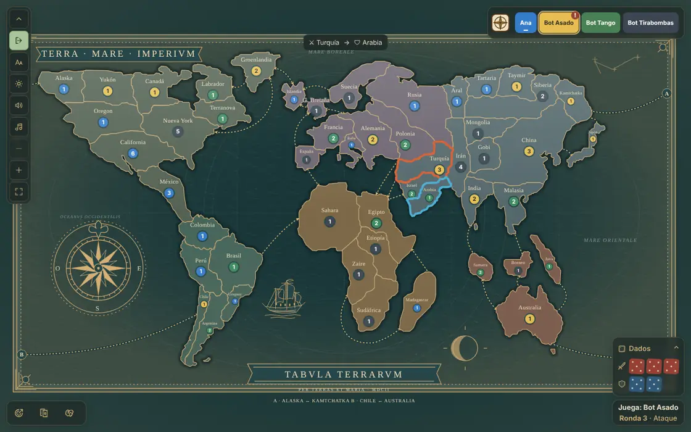
8. La ronda de incorporación
A partir de ahora, cada ronda empieza con la incorporación. Recibís la mitad de tus países en ejércitos, más los extras de los continentes que controlás. Si tenés tres cartas que se pueden canjear, el canje suma más ejércitos. Colocalos igual que al principio.
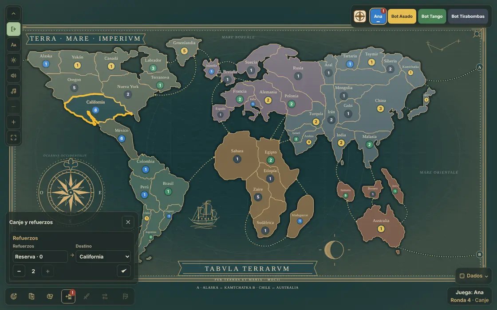
Después vuelve la ronda de ataques, y así hasta que alguien gane.
9. Pactos
En tu turno de ataque, el panel Pactos (tecla P) te deja proponer acuerdos, como no atacarse a través de una frontera. La vista previa muestra lo que vas a proponer antes de enviarlo.
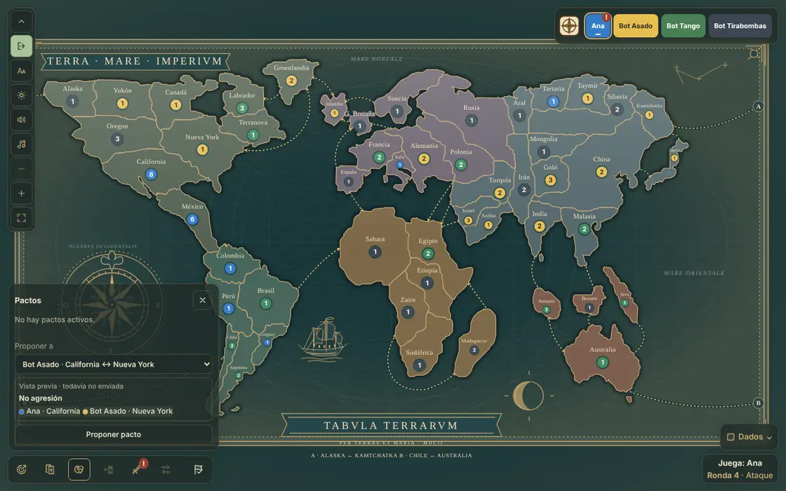
¿Y ahora?
- Las reglas completas están en Clásico.
- Para jugar con amigos, mirá Crear y unirse.
- Cuando quieras más, probá Competitivo o Reconquista.